前言
因为 CS 被 vultr 检测到了，听到要把我封号，有点小慌，吓得我立马把vps删了😅，所以查找了一下解决方法。
在这里记录一下成功反编译 CS，修改 checksum8 算法的过程。
思路来自这里：
https://blog.csdn.net/qq_35938621/article/details/122366079?spm=1001.2014.3001.5501
但有些地方和这篇文章不太一样，因为我按照上面的方法尝试了一遍，没有复现成功。但只要你按照我这篇文章来，百分百成功。
反编译 CS
我这里使用的是 java 在线反编译网站，而不是自己下载反编译工具（因为使用了一下反编译工具，效果都不太好，所以推荐使用在线工具）
link：http://www.javadecompilers.com/
打开网站，上传 conbaltstrike.jar 文件，选择 CFR 反编译工具，点击 Upload and Decompile 上传和反编译。
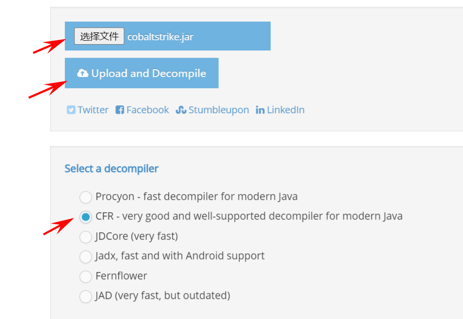
然后就是等待几分钟吧，它完成了之后不会提示你完成了，你需要按一下 F5 刷新一下网页，如果成功了，点击下载即可。
修改 checksum8 算法
项目和环境配置
编译器使用的是 IDEA，用不惯英文的可以去装个中文插件。打开 IDEA ，右上角新建项目，java 版本最好为 1.8，因为兼容性好。
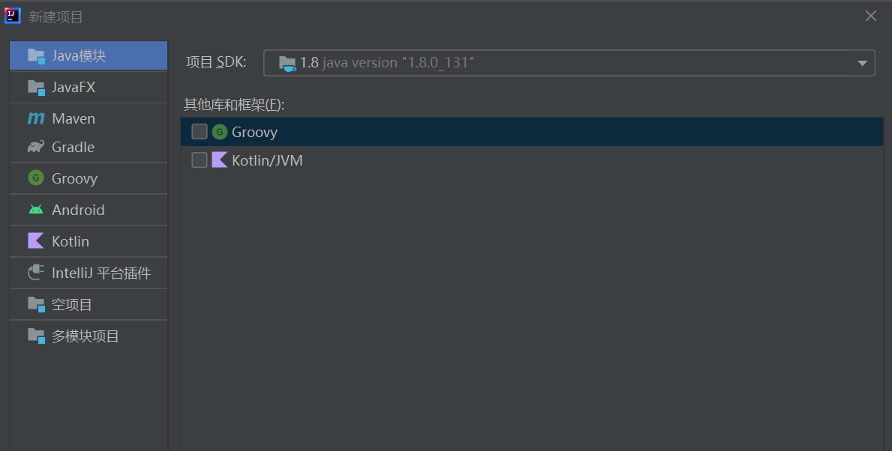
下一步，下一步
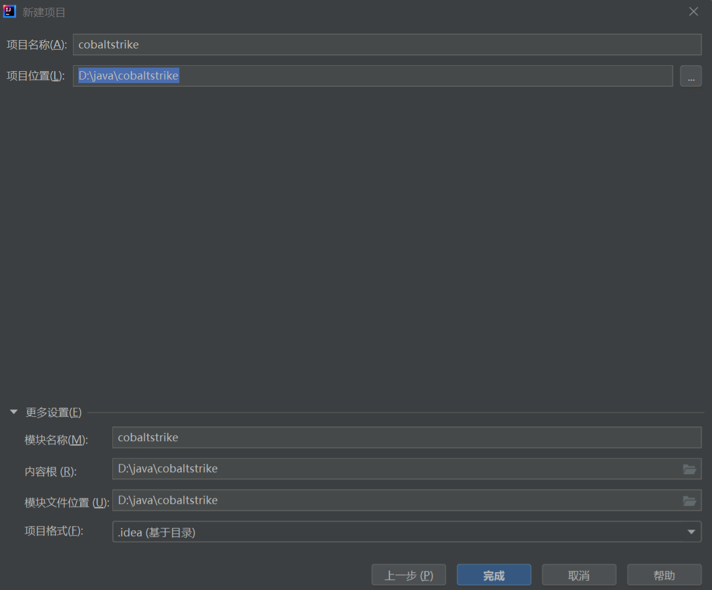
项目名称为 cobaltstrike,放在哪里都 ok，点击完成。
新建两个文件夹：decompiled_src 和 lib。前者放从网站上下载好已解压的 CS 文件，后者放 cobaltstrike.jar 文件（也就是上传到网站上进行反编译的文件）
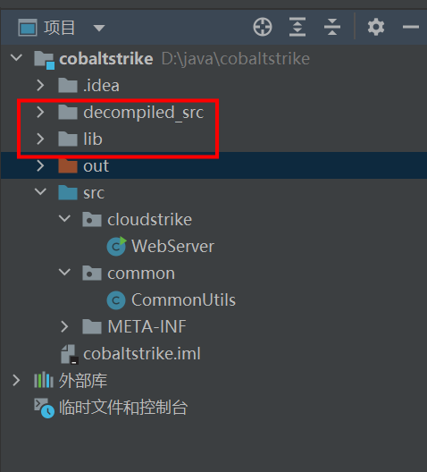
然后 checksum8 算法的位置在 decompiled_src/cloudstrike/WebServer.java 和 decompiled_src/common/CommonUtils.java 这两个文件中，所以需要把他们连带他们的父文件夹一起复制过来，如上图所示。
接下来设置环境：
左上角 文件→项目结构
项目不需要做修改：
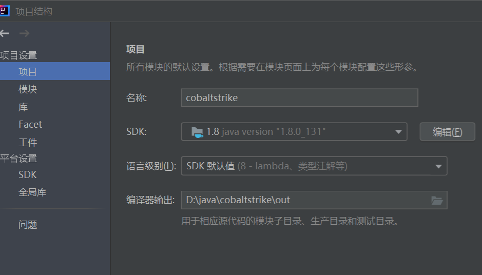
模块的话选择依赖，依赖下方的 + 号，选择 Jar 或目录，选择 lib/conbaltstrike.jar,然后勾选，点击应用。
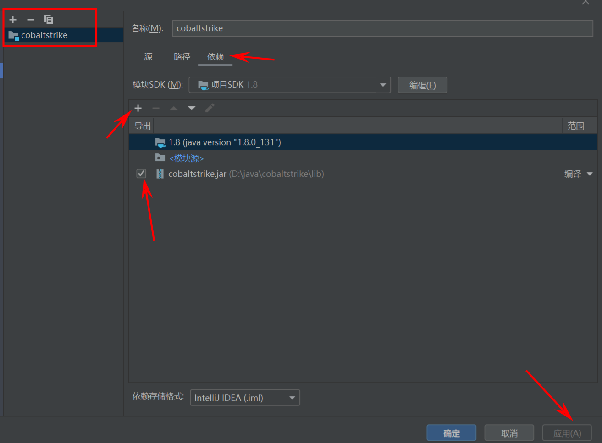
然后点击「工件→JAR→来自有依赖项的模块→然后选择 Aggressor」 出现「aggressor.Aggressor」就说明正确了，然后确定，工件就设置完成了
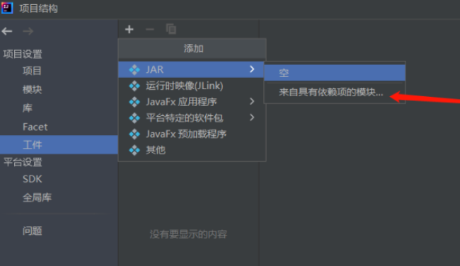
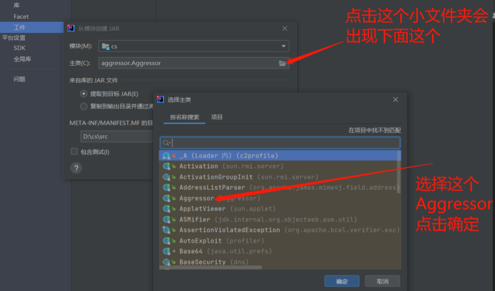
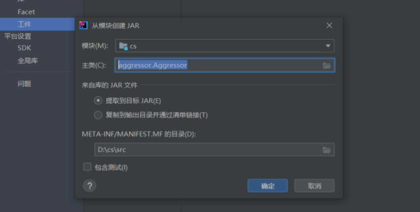
其他的都没什么问题
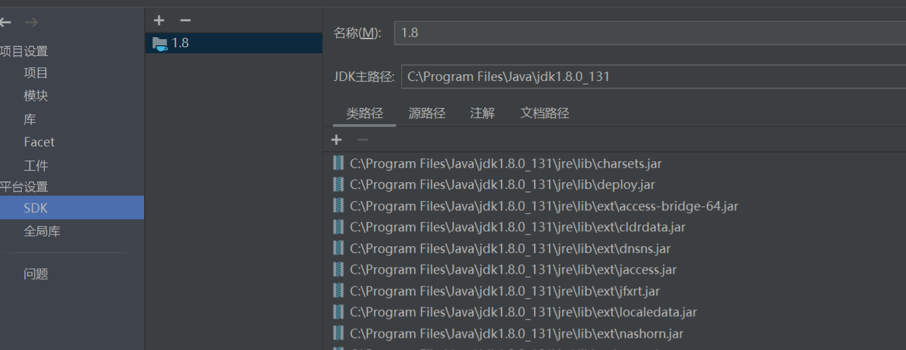
解决反编译后带来的错误
因为反编译肯定会有错误的地方，第一步先解决编译的报错先。
点击工具栏上方 构建→构建工件」，然后点击「构建」

WebServer.java里面 第44 行有一个，第268行有一个

第44行：单击 for ，按 Alt + Enter 键，点击 替换为 ‘Map.forEach()’ 结果如下图：
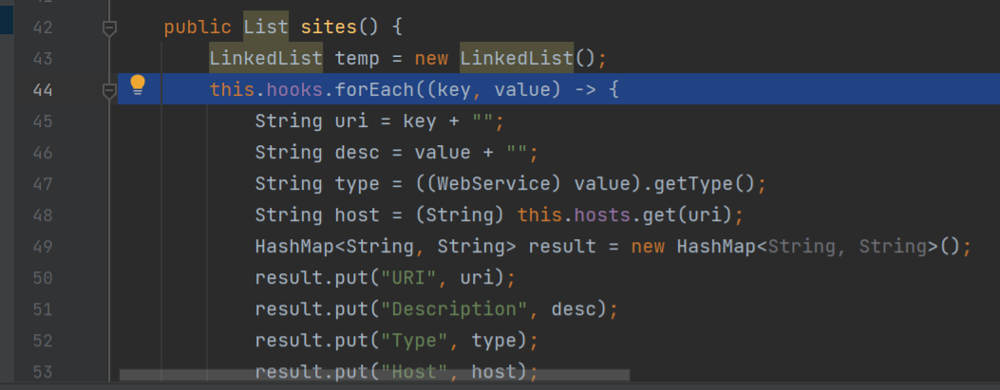
第268行：单击 for ，按 Alt + Enter 键，点击，将for-each 循环替换为迭代器‘for’循环,

还有错误，同理 点击左边的红灯，点击 转换到 'java.util.Map.Entry' 。

然后结果如下图

接下来看 CommonUtils.java 文件，错误出现在 第1563 行
同理都是先将 for-each 循环改变为 迭代器 ‘for’ 循环
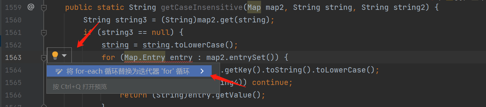
然后又是点击 转换到 'java.util.Map.Entry'
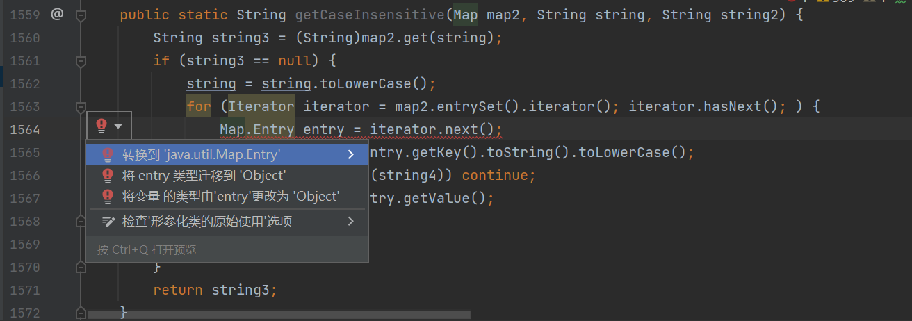
到这里就没有错误了，nice。
修改 checksum8 算法
checksum8 算法脚本
1 | public class EchoTest { |
在线运行 java 网站：
https://c.runoob.com/compile/10/
运行结果：
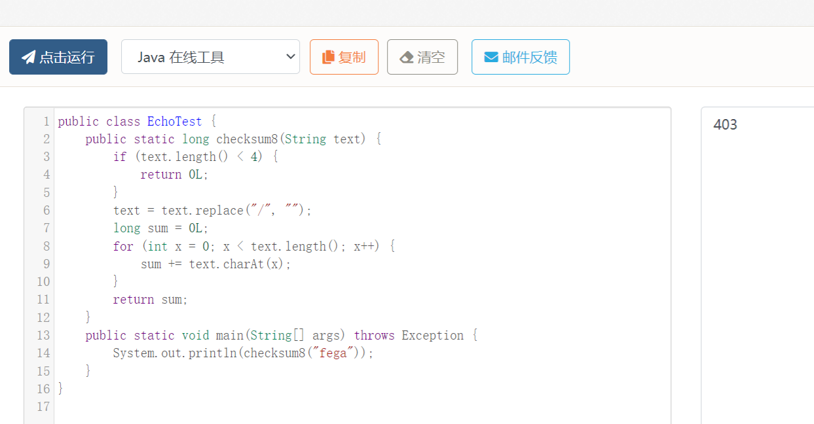
fega 可随意改变，但最好是四位字符（英文字符+数字），因为按着他的来没有成功，很玄学，也可能是我们反编译的源码不太一样。
定位到 checksum8 代码的位置，我所作的修改如下：
WebServer.java文件中：
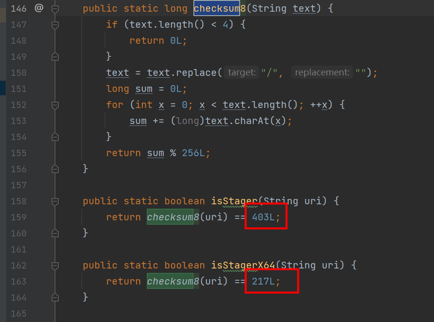
CommonUtils.java 文件中：92L和93L不需要改变，改变 return 的返回值即可。
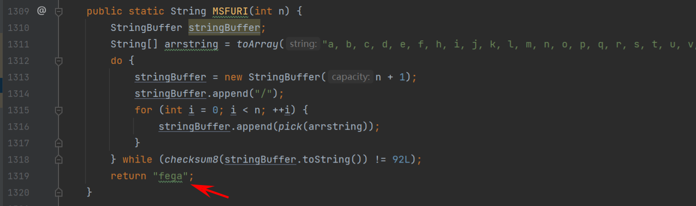

最后上线成功，特征码也消失了：
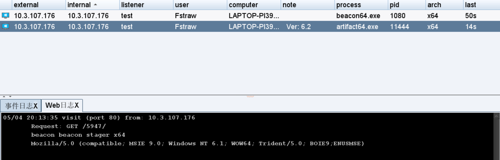
大于四位数不能上线：
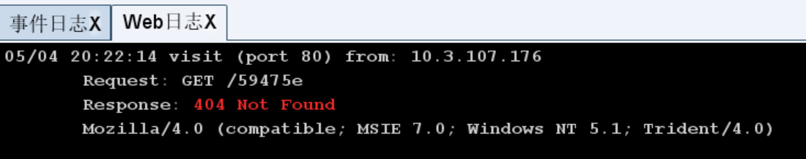
可能和这里有关，但我们不需要关心。
因为 vultr 是依据特征码进行检测的，比如 aaa9,所以4位数也足够安全了，有 2^62^ 种可能性，不可能依靠穷举找到我们。
总结
java 菜鸡学会了个小技能，反编译 cs。
 微信
微信 支付宝
支付宝